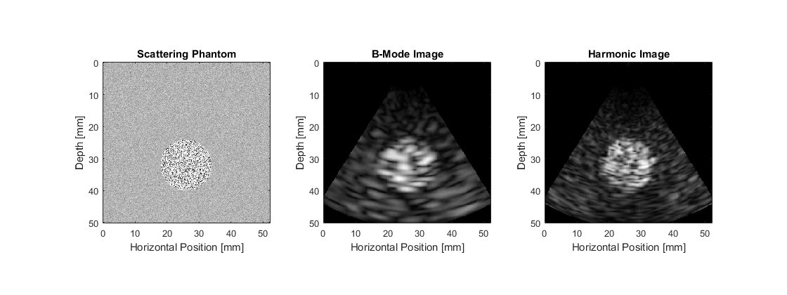

Simulating B-mode Images Using A Phased Array Example
This example illustrates how k-Wave can be used for the simulation of B-mode ultrasound images using a phased-array or sector transducer. It builds on the Simulating B-mode Ultrasound Images Example.
To allow the simulated scan line data to be processed multiple times with different settings, the simulated RF data is saved to disk. This can be reloaded by setting run_simulation = false within the example m-file. The data can also be downloaded from http://www.k-wave.org/datasets/example_us_phased_array_scan_lines.mat
Contents
Running the simulation
The simulation is run in a similar same way to Simulating B-mode Ultrasound Images. In this example, a 64 element sector transducer is defined with all the elements active. This is used to replace both the source and sensor inputs. The scan lines are then simulated sequentially, with the value for transducer.steering_angle modified for each scan line.
% loop through the range of angles to test for angle_index = 1:number_scan_lines % update the current steering angle transducer.steering_angle = steering_angles(angle_index); % run the simulation sensor_data = kspaceFirstOrder3D(kgrid, medium, transducer, transducer, input_args{:}); % extract the scan line from the sensor data scan_lines(angle_index, :) = transducer.scan_line(sensor_data); end
Scan conversion
After simulation, the scan lines are processed before display following the steps described in Simulating B-mode Ultrasound Images. However, in this example, the scan lines are taken at different steering angles. This means the scan lines must be converted from polar coordinates to Cartesian coordinates. This step is performed using scanConversion
% set the desired size of the image image_size = [Nx * dx, Ny * dy]; % convert the data from polar coordinates to Cartesian coordinates for % display b_mode_fund = scanConversion(scan_lines_fund, steering_angles, image_size, c0, kgrid.dt); b_mode_harm = scanConversion(scan_lines_harm, steering_angles, image_size, c0, kgrid.dt);
The scattering phantom along with the simulated ultrasound images are shown below.
